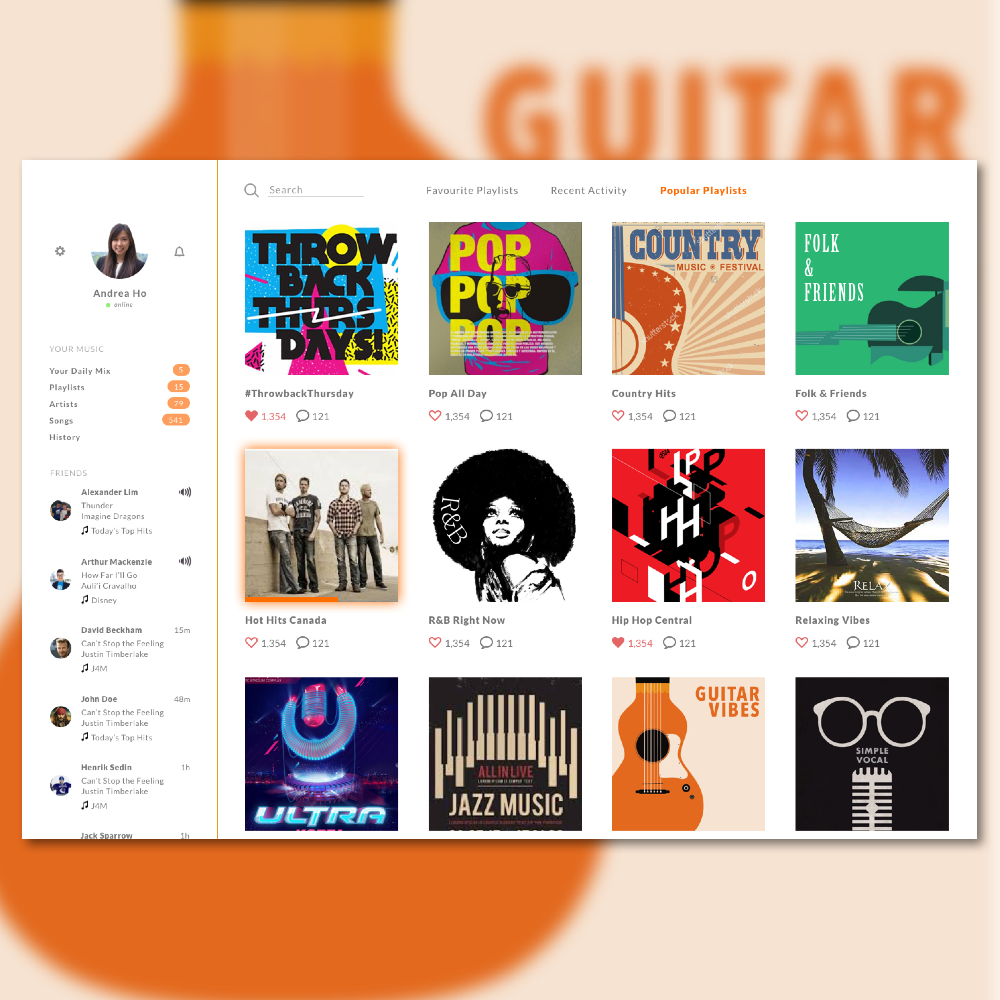

Day 75 - Turn It Up
I'm pretty satisifed with the final result for this one. I decided to take a break from the dark themes and try something clean, hence the color white.
I wanted to copy a design I had found on Pinterest, but as I was creating it, I found myself creating it more and more for the user. I definitely didn't do user research on this mini design, but I did base it off of my past experiences with desktop music apps, such as Spotify. The content is very similar to Spotify's music app, however, the layout is completely different. I've decided to place the friends list on the left side with the user's personalized information. Instead of listing the online and offline friends, I created the list similar to Spotify's app. Friends who are "online" will be those who are listnening on the app. This is shown through the speaker icon. As for "offline" friends, there will a time shown when they last played a song on the app.
Another design part I want to stress is the user's "Current Song Playing". To be honest, I didn't know where to place that information. I thought of a slideout from a tab popping out that listed "Now Playing." However, because of aesthetics, I decided not to include it. I have yet to find a solution to this. However, I did add one aspect to show which song is playing, and that is the glowing highlight beneath the album Hot Hits Canada. Even though it doesn't show which song is currently playing, it shows which album the song is from. The orange bar in the image shows how far the user is in the song. However, if the user navigates to another page, the "Current Song Playing" will not be shown anymore, unless they head into the Hot Hits Canada playlist. So I have to add a status bar of some sort to allow the user to pause, skip and switch songs.
I'm glad I challenged myself to this design. It was easy to build, however again, there were numerous design questions I had to ask myself in order to create a feasible and easy-to-use music app.